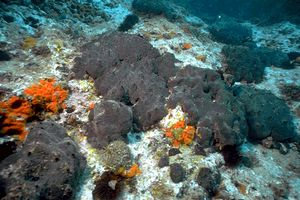

Рассмотрим некоторых представителей этой категории.
Туалетная губка.
Туалетная губка является гермафродитом и может размножаться как почкованием, так и половым путём. Живая губка имеет тёмно-серый цвет, после высыхания она становится жёлтой или коричневой. Личинки губки являются свободно плавающими, однако на поздних стадиях развития они прикрепляются к морскому дну или другой подходящей поверхности. Губки растут довольно медленно: для того, чтобы губка достигла размера 20 см, может потребоваться до 40 лет. Добыча губок привела к уменьшению численности их популяции.

Чаша Нептуна.
В высоту может достигать 1,25 м, отверстие эллиптической формы, до 79 см в длину и 23 см в ширину. Окраска живой губки от белой до бледно-жёлтой. Обитает в тропических водах Индо-Тихоокеанской области от берегов Индокитая на севере ареала до залива Карпентария на севере Австралии на юге. Очень редкий, исчезающий вид, вымерший на большей части своего былого ареала. Последняя находка этой губки в водах Индонезии (у западных берегов острова Ява) датируется 1908 годом, а у побережья Сингапура её не встречали с 1870-х годов. На протяжении почти ста лет не было найдено ни одного экземпляра чаши Нептуна и многие учёные считали этот вид вымершим. Однако, с 1990-х годов эти губки стали снова появляться в донных пробах у северного побережья Австралии и в Арафурском и Тиморском морях, а в марте 2011 года две молодые особи были обнаружены у берегов Сингапура.